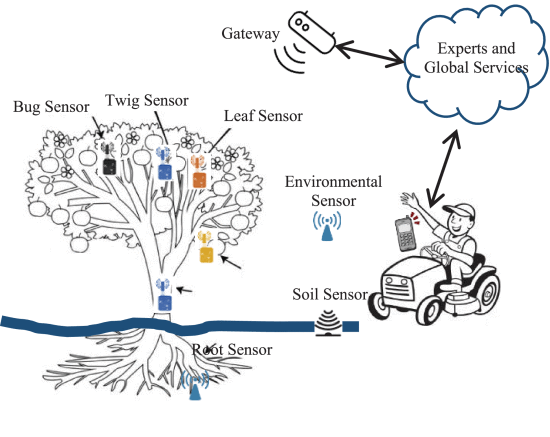

Internet of Things(IoT) describes the physical objects that are embedded with sensors and softwares that are used to gather and share information. Sensors can be embedded in almost anything these days and it calculates the required result with high precision. It is used in reducing energy consumption, assessing factors that harm the ocean, providing economic sustainability and so on, hence supporting the environment in many ways.
By implementing sensors, whose battery lasts for 5-10 years and consumes less energy, which makes it cost effective and convenient to use, in the waste bins to keep track of the exact level of waste, the waste collection trucks just have to come when the bin is full. When the information about the status of the waste bins is requested by the collectors, via a smartphone, the number of waste bins and their locations, along with other information, are sent by the server. This increases efficiency and reduces the number of collection trucks on the roads, thereby reducing the fuel and energy consumption and removing the waste at proper time. (Hong et al., 2014)
Sensors can be implemented in forest areas to monitor the changes in soil, water and also weather conditions. Based on the data generated by these sensors, the people could take timely interventions. In 2015, a project to celebrate the 50th anniversary of Ericsson Malaysia, the Connected Mangrove Project, used this technology, that is the sensors were fixed in various parts of the forest to monitor the soil, water, weather conditions and the risks involved, which helped people take precautions at proper time. This helped to increase the lifespan of mangroves from 30% to 80%, several sustainable livelihoods re-emerged for the local community and the forest that they created is now protecting the community from erosion and floods. They received the United Nations Momentum for Change award for this project due to its numerous positive impacts.
Crop production is a very important industry that plays a crucial role in the economic stability of the entire world. Crops like cotton, wool, rubber, gum and many more are used in the everyday life of people. Sensors play an important role in making this industry more proficient by monitoring the crops. It is known that farmers spend almost 70% of their time just to monitor and analyse the state of the crops. IoT sensors can be used to do this with higher accuracy, so that the farmers do not have to spend time just to monitor the fields. The timely reporting using sensors are cost-effective and also help in the detection of any unwanted state in the crops. (Ayaz et al., 2019)
